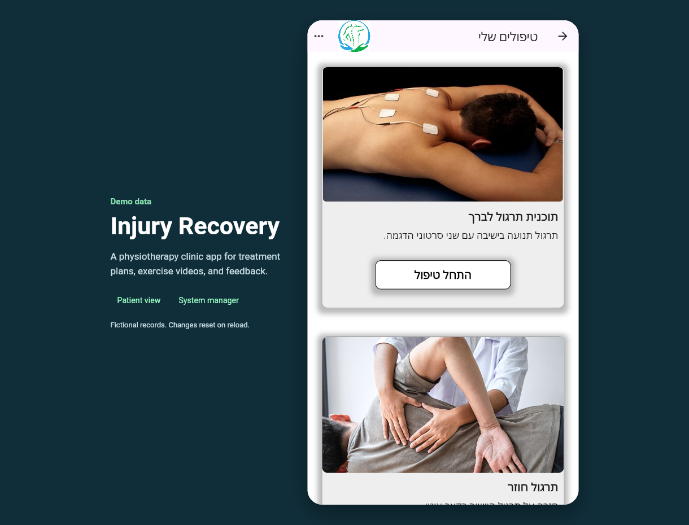

Heads up: this is an auto-generated portfolio, made by a skill I wrote. Enjoy ;)
Moslem Asaad
Full-stack engineer who takes features from design to production.
I build React and Node.js features for a delivery-management platform used by enterprise retailers and carriers. I came up through test automation, so every change I ship has tests, and risky ones go out behind feature flags.
Open to remote full-stack roles
Featured project
Shipped ahead of the 5 Oct 2026 legal deadlineDigital transport documents with a scannable QR code
Spain's Sustainable Mobility Law 9/2025 requires the transport document to be digital and scannable by roadside inspectors. Bringg had no route-level document, no QR code and no way to tell a customer's system about one.
I took this from design document to production across 6 services. When a driver starts a route, the platform generates a compliance PDF, stores it for 7 days after the route ends, and sends the driver app a link it turns into a QR code on the device, so it works offline. The customer's own systems get a webhook when the document is ready.
I designed the database schema and an idempotent write path (one document per route, enforced in application code), added server-side PDF rendering to the templates service, resolved the right truck and trailer plates for each route, and wrote the test plans and integration guide for the webhook. I am now extending the end-to-end automation to the webhook and the QR code on mobile, repeating each test 50 times to prove it is stable.
- Driver starts a routeThe core platform publishes a route-started event.
- Eligibility check and claimA Node.js service reads the merchant and team configuration, then claims the route so a retry never creates a second document.
- PDF renderThe templates service builds the document with vehicle and trailer plates and renders it through Gotenberg.
- Store and notifyThe document is saved with a token and a retention date. A documents_ready webhook goes to the customer and a real-time update tells the driver app.
- Roadside scanThe inspector scans the QR code. A token-guarded URL returns the PDF, or a clear error when it has expired.
| Scenario | Load | Result | What I learned |
|---|---|---|---|
| Parallel burst | 50 route starts at once | 96% delivered, p95 13.6 s | Slow tail comes from the Chromium queue |
| Baseline | 1 per second, 2 minutes | Passed | Reference numbers for comparison |
| Find capacity | Ramp 10 to 30 per second, 10 minutes | 73.5% delivered, p95 9.5 s | The limit moves from our concurrency gate to Gotenberg's Chromium capacity |
The results led to removing the concurrency gate in the PDF renderer, so capacity is now bounded by the render service itself.
Live demos
Try them in your browserFour small projects you can use right now. Three are re-creations that run in the browser, written for this site with made-up data. The fourth is my original Flutter app.
QR transport document
Start a route, watch the document pipeline run, get a real scannable QR code, then scan it as a roadside inspector. Press start twice to see retries stay safe.
Open demo → New · interactiveWebhook to Discord
Send a Gitea webhook and see the Discord message it creates. Send it twice and watch the duplicate filter work. A re-creation of my Spring Boot notifier.
Open demo → New · interactiveAI analyst chat
A streaming chat with tool calls, a chart and a live event stream, built like the analyst assistant I shipped. Answers are scripted, so no AI is called.
Open demo → My 2024 final project
Injury Recovery app
The Flutter app for physiotherapy clinics I led with a team of 3. Open it, try the sample patient and the system manager views. Demo data only.
Open app →More work
Selected, 2026-
AI analyst assistant
React · TypeScript · AG-UI
Brought an AI analytics agent into the web app. I defined the typed streaming chat contract, exposed it through the public TypeScript SDK and built the React chat drawer, including thread lists and a new-messages pill that only counts unseen replies.
Contract types
SDK client
Chat UI with tests -
Live auto-dispatch status
Node.js · PostgreSQL · Rails · React
Saved the outcome of every route-optimization cycle per order, then served it through batch APIs, real-time events and a filterable, sortable column in the dispatcher UI, so dispatchers see why an order was or wasn't assigned. I planned and split it into 15 sub-tasks across 6 repositories. It took three sprints: build the data path, deploy 4 backend services in one day, then merge the UI. It is the largest feature I have owned end to end.
3 sprints
8+ repositories
20+ sub-tasks -
Print receipt
React · SDK · Node.js
Led the first full-stack feature I owned: dispatchers can print order receipts straight from the dispatch UI. It covered the SDK integration with the templates service, the print menus in the web app, deprecating an unused printer field, a backport to the older UI, and a validation step that stops broken print templates from being saved.
9 PRs in 3 repositories
Shipped Apr to May 2026 -
Test platform and React 18 upgrade
Java · Selenium · React Testing Library
In QA automation I started stabilizing flaky tests, refactored the page-object hierarchy in 3 days, and started an Automated Merchant Builder that removed manual onboarding checks. Later I migrated 180+ front-end test files for the React 18 upgrade in 3 days, and wrote AGENTS.md guides so AI tools write tests that follow our patterns.
Flaky-test owner
180+ files in 3 days
5-month epic -
Geocoding reliability
Node.js · Redis · Google Places
Fixed drivers being sent to stale addresses after a waypoint update, a place-details cache that stored the wrong data, and a missing-city fallback. Each fix shipped behind a feature flag, with logging for the transition from old cache entries.
3 production bugs
Feature-flagged
Regression tests -
Dispatcher UI and migration
React · Angular · TypeScript
Added order cost and quantity to map tooltips, route-level inventory totals, and parking spots that follow the map selection. Rewrote a legacy Angular settings page in React and removed pages no customer used.
Order Explorer
Map and Gantt timeline
Angular to React -
Merchant-onboarding agent
TypeScript · LLM agents
Hackathon project, January 2026. An LLM agent that sets up a new merchant by creating its delivery blocks and teams through platform APIs.
Hackathon
Tool-calling agent
AI tooling
Built with and for AI coding toolsI use AI coding tools every day, and I build tools that make them useful for the whole team. I review and own every line they write.
Test merchant builder
A reusable Claude Code skill that creates a production-like test merchant with realistic data from one prompt. It replaced a long manual setup, and every developer uses it for testing.
End-to-end test writer
A skill that writes automated tests in our existing framework, style and lint rules, backed by AGENTS.md guides so any AI tool follows our patterns. It can also start from a Jira ticket.
CI triage and QA deploys
Skills that find why a CI run failed and deploy a service to a QA environment, so these routine tasks take one command.
Analyst assistant UI
The React and TypeScript chat for an AI analyst: streaming answers, thread lists, and a typed SDK client. Try the demo above.
Merchant-onboarding agent
A hackathon LLM agent in TypeScript that sets up a new merchant by calling platform APIs as tools.
This portfolio
A skill I wrote reads my GitHub and Jira activity and generates my monthly career reports. The numbers on this page come from it.
Growth in numbers
Jul 2025 to Nov 2026 · updated 4 Nov 2026I joined with no professional engineering experience and started as a QA automation engineer, with one repository. Each month the scope grew: more repositories, more reviews of other people's code, then features I owned across the stack.
Monthly pull requests merged and code reviews given. July 2025 was a burst of first investigation branches. Reviews started in August 2025 and reached 69 in May 2026, when I also shipped the print receipt feature. October 2026 was quiet because it was my wedding month: one merge, with 8 pull requests opened in the last week. November counts only the first 4 days. Through May the counts come from my activity reports, and from June on they are counted directly from GitHub.
Month by month, June to November 2026
| Month | What I delivered | PRs merged | Reviews | Repos merged into |
|---|---|---|---|---|
| November (to 4th) | Removed two unused legacy settings pages, fixed how realtime routes load inside expanding teams, started QR-code mobile automation tests | 7 | 28 | 2 |
| October | My wedding month 🎉. Even so, I fixed drivers being sent to stale geocoded addresses, closed the compliance project, and opened 8 PRs, including scoping global search to the user's company and moving the merchant profile page to React | 1 | 13 | 1 |
| September | Route compliance documents merged: schema, configuration, PDF rendering, webhook, real-time updates and the load tests that removed the renderer bottleneck | 17 | 38 | 8 |
| August | Analyst chat live end to end, per-route inventory totals, compliance documents project started | 14 | 32 | 5 |
| July | Auto-dispatch UI merged, React 18 migration of 180+ test files, print template validation, first work in two new repositories | 25 | 58 | 8 |
| June | Print receipt v1, map loading fix, auto-dispatch status built across 6 repositories and its backend deployed | 27 | 67 | 10 |
Merged pull requests and reviews of other people's pull requests, counted from GitHub on 4 November 2026. Jira shows 24 of my tickets completed since 1 September, mostly stories.
Initiatives I led or owned
| Initiative | When | Role | Result |
|---|---|---|---|
| Flaky-test stabilization | Jul to Dec 2025 | Owner | Fewer false CI failures and faster releases |
| Automated Merchant Builder | Nov 2025 to Mar 2026 | Led | Replaced manual QA for merchant onboarding scenarios |
| React 18 automation migration | Mar 2026 | Led | Full suite adapted in one sprint, unblocking the front-end upgrade |
| Print receipt | Apr to May 2026 | Led | Dispatchers print receipts from the dispatch UI |
| Map grey-screen fix | May 2026 | Led | Found two independent root causes in 2 days and restored the map for admin users |
| Auto-dispatch status | Jun to Jul 2026 | Led | Live in production across 8+ repositories |
| Analyst chat | Aug 2026 | Led | 4 pull requests merged in one day to put the chat live |
| Route compliance documents | Aug to Sep 2026 | Led | Merged and load-tested ahead of the 5 Oct 2026 legal deadline |
| Legacy page cleanup and merchant profile in React | Oct to Nov 2026 | Owned | Removed two unused settings pages, moved the merchant profile page to React |
| Realtime route loading in expanding teams | Nov 2026 | Owned | Fixed missing drivers and wrong order counts when a team is expanded, behind feature flags |
Side projects
On GitHub · moslem-asaad-
DevQALink
Full-stack · JavaScript
A framework that connects QA and development teams. QA schedules test bundles against a specific build or the latest one, gets detailed reports, and failures open bug tickets automatically.
Source on GitHub
37 commits
Backend and frontend -
Injury Recovery
Flutter · Dart
A Flutter app for injury rehabilitation. Patients follow treatment plans with exercise videos and send feedback requests, while a system manager manages the categories, videos and users. Firebase handles sign-in and data, and the app has unit and integration tests.
Try the live demo
Source on GitHub
83 commits -
Gitea automation and notifier
Java · Selenium · Spring Boot · Docker
Two projects around a self-hosted Gitea server. A Selenium and Maven suite tests sign-in, repository creation and adding files, and runs in CI/CD. A Spring Boot service receives Gitea webhooks, ignores duplicate deliveries, and posts the events to Discord, with API tests and a Dockerfile.
-
Systems and coursework
C · OCaml · Java · Python
University projects that go below the framework level: a shell implementation in C, operating-systems exercises in C, a compiler in OCaml, a Java networking course project and numerical analysis in Python.
Experience
Bringg · Jul 2025 to presentFull-Stack Software Engineer
- Own features from design to production across 12+ repositories. 190+ pull requests merged and 430+ code reviews since joining in July 2025.
- Led the QR-code compliance project, the AI analyst assistant, auto-dispatch status and print receipt.
- Led the Automated Merchant Builder epic (Nov 2025 to Mar 2026), kept ownership of flaky-test stabilization, and adapted the whole end-to-end suite to React 18 in one sprint.
- Work daily with Product, Design and backend teams to turn customer issues into shipped fixes.
QA Automation Engineer
- Built and maintained the Java and Selenium end-to-end suite for route planning, dispatch, orders, timeline and inventory, starting with a 16-test routing and optimization suite delivered in 6 days.
- Started the flaky-test stabilization work, with condition-based waits, retries and sturdier locators, which cut false CI failures.
- Refactored the page-object hierarchy in 3 days.
- Started the Automated Merchant Builder epic a month before it was formally created.
- Added end-to-end coverage for webhook pipelines and real-time updates.
B.Sc. Software Engineering
Ben-Gurion University of the Negev · GPA 82.13
Technical skills
- Languages
- TypeScript, JavaScript, Ruby, Java, Python, SQL, Dart, C
- Frontend
- React, Angular, Flutter, HTML, CSS, Vite, Google Maps API, i18n, right-to-left layouts
- Backend
- Node.js, Ruby on Rails, REST APIs, microservices, webhooks, real-time events, RabbitMQ, PostgreSQL, Redis, Firebase (Auth, Firestore), Supabase
- DevOps
- Git, Docker, Kubernetes, Jenkins, CI/CD, Grafana, OpenSearch, feature flags
- Testing
- Jest, RSpec, Selenium, end-to-end automation, k6 load testing
- AI
- LLM integration, AI agents, streaming chat UIs, prompt engineering, Claude Code
Let's build something that ships.
- Emailasaadmoslem2000@gmail.com
- Phone058-686-8437
- LinkedInlinkedin.com/in/moslem-asaad-20b8a1219
- GitHubgithub.com/moslem-asaad